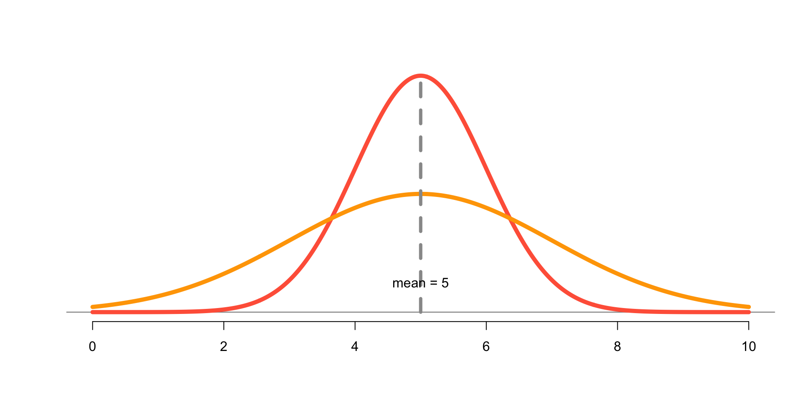

Normal Approximation and Box Models
STAT 20: Introduction to Probability and Statistics
A Box Model
Look at a chance problem like drawing (with replacement) from a box with numbered tickets
Box Models provide an analogy for many chance processes which help to analyze chance variability
Flipping a fair coin
\(X\) = Getting heads when tossing a fair coin (once).
Box with tickets:
\[ \boxed{ \ \fbox{0} \quad \fbox{1} \ } \]
Draw one ticket out of this box.
Flipping a biased coin
\(X\) = Getting heads when tossing a biased coin (2/3 chance of heads).
Box with tickets:
\[ \boxed{ \ \fbox{0} \quad \fbox{1} \quad \fbox{1} \ } \]
Draw one ticket out this box.
Flipping another biased coin
\(X\) = Getting heads when tossing a biased coin (1/4 chance of heads).
Box with tickets:
\[ \boxed{ \ \fbox{0} \quad \fbox{0} \quad \fbox{0} \quad \fbox{1} \ } \]
Draw one ticket out this box.
Flipping a fair coin 5 times
\(X\) = Number of heads when tossing a fair coin five times.
Box with tickets:
\[ \boxed{ \ \fbox{0} \quad \fbox{1} \ } \]
Draw five tickets with replacement out of this box, and add them up.
Number of spots when rolling a fair die
\(X\) = number of spots when rolling a die (once).
Box with tickets:
\[ \boxed{ \ \fbox{1} \quad \fbox{2} \quad \fbox{3} \quad \fbox{4} \quad \fbox{5} \quad \fbox{6} \ } \]
Draw one ticket out of this box.
Sum of spots when rolling a pair of fair dice
\(X\) = Sum of dice.
Box with tickets:
\[ \boxed{ \ \fbox{1} \quad \fbox{2} \quad \fbox{3} \quad \fbox{4} \quad \fbox{5} \quad \fbox{6} \ } \]
Draw two tickets with replacement out of this box, and add them.
Determining a box
\(X\) is a random variable with the distribution shown below:
\[ X = \begin{cases} 3, \; \text{ with prob } 1/3\\ 4, \; \text{ with prob } 1/4\\ 5, \; \text{ with prob } 5/12 \end{cases} \]
Box with tickets:
\[ \boxed{ \ \fbox{3} \ \fbox{3} \ \fbox{3} \ \fbox{3} \quad \fbox{4} \ \fbox{4} \ \fbox{4} \quad \fbox{5} \ \fbox{5} \ \fbox{5} \ \fbox{5} \ \fbox{5} \ } \]
Draw one ticket out of this box.
5 spins of an American roulette
\(X\) = Number of spins landing on red
Box with 38 tickets:
\[ \boxed{ \ \underset{\text{18 black}}{\fbox{0} \ \fbox{0} \dots \fbox{0}} \quad \underset{\text{18 red}}{\fbox{1} \ \fbox{1} \dots \fbox{1}} \quad \underset{\text{2 green}}{\fbox{0} \ \fbox{0}} \ } \]
Draw five tickets with replacement out of this box, and add them.
Box Model and Expected Value
Number of spots when rolling a fair die
\(X\) = number of spots when rolling a die (once).
Draw one ticket out this box:
\[ \boxed{ \ \fbox{1} \quad \fbox{2} \quad \fbox{3} \quad \fbox{4} \quad \fbox{5} \quad \fbox{6} \ } \]
E(X) = ?
Var(X) = ?
Number of spots when rolling a fair die
\(X\) = number of spots when rolling a die (once).
Draw one ticket out this box:
\[ \boxed{ \ \fbox{1} \quad \fbox{2} \quad \fbox{3} \quad \fbox{4} \quad \fbox{5} \quad \fbox{6} \ } \]
E(X) = Average of tickets in box
Var(X) = Variance of tickets in box
Number of spots when rolling a fair die
\(X\) = number of spots when rolling a die (once).
Draw one ticket out this box:
\[ \boxed{ \ \fbox{1} \quad \fbox{2} \quad \fbox{3} \quad \fbox{4} \quad \fbox{5} \quad \fbox{6} \ } \]
\[ E(X) = \frac{1 + 2 + 3 + 4 + 5 + 6}{6} = 3.5 \]
\[ Var(X) = \frac{(1-3.5)^2 + (2-3.5)^2 + \dots + (5-3.5)^2 + (6-3.5)^2}{6} = 2.91 \]
Sum of spots when rolling a pair of fair dice
Draw two tickets with replacement out of this box, and add them.
\[ \boxed{ \ \fbox{1} \quad \fbox{2} \quad \fbox{3} \quad \fbox{4} \quad \fbox{5} \quad \fbox{6} \ } \]
Sum of dice \(S = X_1 + X_2\), where \(X_1\) is the number in first ticket, and \(X_2\) is the number in second ticket.
\(E(S) = ?\)
\(Var(S) = ?\)
Sum of spots when rolling a pair of fair dice
Draw two tickets with replacement out of this box, and add them.
\[ \boxed{ \ \fbox{1} \quad \fbox{2} \quad \fbox{3} \quad \fbox{4} \quad \fbox{5} \quad \fbox{6} \ } \]
Sum of dice \(S = X_1 + X_2\), where \(X_1\) is the number in first ticket, and \(X_2\) is the number in second ticket.
\(E(S) = E(X_1 + X_2)\)
Sum of spots when rolling a pair of fair dice
Draw two tickets with replacement out of this box, and add them.
\[ \boxed{ \ \fbox{1} \quad \fbox{2} \quad \fbox{3} \quad \fbox{4} \quad \fbox{5} \quad \fbox{6} \ } \]
Sum of dice \(S = X_1 + X_2\), where \(X_1\) is the number in first ticket, and \(X_2\) is the number in second ticket.
\(E(S) = E(X_1 + X_2) = E(X_1) + E(X_2)\)
Sum of spots when rolling a pair of fair dice
Draw two tickets with replacement out of this box, and add them.
\[ \boxed{ \ \fbox{1} \quad \fbox{2} \quad \fbox{3} \quad \fbox{4} \quad \fbox{5} \quad \fbox{6} \ } \]
Sum of dice \(S = X_1 + X_2\), where \(X_1\) is the number in first ticket, and \(X_2\) is the number in second ticket.
\(E(S) = E(X_1 + X_2) = E(X_1) + E(X_2) = 2E(X)\)
Sum of spots when rolling a pair of fair dice
Draw two tickets with replacement out of this box, and add them.
\[ \boxed{ \ \fbox{1} \quad \fbox{2} \quad \fbox{3} \quad \fbox{4} \quad \fbox{5} \quad \fbox{6} \ } \]
Sum of dice \(S = X_1 + X_2\), where \(X_1\) is the number in first ticket, and \(X_2\) is the number in second ticket.
\(E(S) = E(X_1 + X_2) = E(X_1) + E(X_2) = 2E(X) = 2(3.5) = 7\)
Sum of spots when rolling a pair of fair dice
Draw two tickets with replacement out of this box, and add them.
\[ \boxed{ \ \fbox{1} \quad \fbox{2} \quad \fbox{3} \quad \fbox{4} \quad \fbox{5} \quad \fbox{6} \ } \]
Sum of dice \(S = X_1 + X_2\), where \(X_1\) is the number in first ticket, and \(X_2\) is the number in second ticket.
\(Var(S) = Var(X_1 + X_2)\)
Sum of spots when rolling a pair of fair dice
Draw two tickets with replacement out of this box, and add them.
\[ \boxed{ \ \fbox{1} \quad \fbox{2} \quad \fbox{3} \quad \fbox{4} \quad \fbox{5} \quad \fbox{6} \ } \]
Sum of dice \(S = X_1 + X_2\), where \(X_1\) is the number in first ticket, and \(X_2\) is the number in second ticket.
\(Var(S) = Var(X_1 + X_2) = Var(X_1) + Var(X_2)\)
Sum of spots when rolling a pair of fair dice
Draw two tickets with replacement out of this box, and add them.
\[ \boxed{ \ \fbox{1} \quad \fbox{2} \quad \fbox{3} \quad \fbox{4} \quad \fbox{5} \quad \fbox{6} \ } \]
Sum of dice \(S = X_1 + X_2\), where \(X_1\) is the number in first ticket, and \(X_2\) is the number in second ticket.
\(Var(S) = Var(X_1 + X_2) = Var(X_1) + Var(X_2) = 2Var(X)\)
Important Random Variables and CLT
Expected Value for S sum of draws from a box model:
\[ \Large E(S) = (\text{# of draws}) \times (\text{avg of box}) \]
\[ \begin{align} E(S) &= E(X_1 + \dots + X_n) \\ &= E(X_1) + \dots + E(X_n)\\ &= nE(X) \end{align} \]
Variance for S sum of draws from a box model:
\[ \Large Var(S) = (\text{# of draws}) \times (\text{variance of box}) \]
\[ \begin{align} Var(S) &= Var(X_1 + \dots + X_n) \\ &= Var(X_1) + \dots + Var(X_n)\\ &= n \times Var(X) \end{align} \]
Standard Error
How far off we expect to be from the expected value?
\[ \Large SE(S) = (\text{# of draws})^{1/2} \times (\text{SD of box}) \]
\[ \begin{align} SD(S) &= \left( nVar(X) \right)^{1/2} \\ &= \sqrt{n} \times Var(X) \end{align} \]
As we increase the number of draws, the SE becomes larger
SE is a measure of the likely size of the chance error
Important Random Variables
\(X\): single ticket
\(S\): sum of \(n\) tickets (sample sum)
\(\bar{X}\): average of \(n\) tickets (sample mean)
Normal Distribution
Normal Distribution
The most important continuous distribution in Statistics.
Anatomy of Normal Curve
Normal Distribution: \(\mu = 5\), \(\sigma=1\)
Normal Distributions: different means
Normal Distributions: different std-devs
Normal Distribution
Total area under the curve?
Normal Distribution
Total area under the curve is 1
68% of area within \(1 \sigma\)
95% of area within \(2 \sigma\)
99.7% of area within \(3 \sigma\)

Functions in R
dnorm() computes the density \(f(x)\) of \(X \sim N(\mu, \sigma)\)
dnorm(0, mean = 0, sd = 1) computes \(f(0)\) for \(X \sim N(0, 1)\)
pnorm() computes the CDF \(F(x) = P(X \leq x)\) of \(X\)
pnorm(0.5, mean = 1, sd = 2) computes \(F(0) = P(X \leq 0)\) for \(X \sim N(1, 2)\)
rnorm() generates random numbers from a Normal distribution
rnorm(n = 10, mean = 5, sd = 3) generates 10 values from \(X \sim(5, 3)\)
If \(X \sim N(\mu = 5, \sigma=1)\), then \(P(X \leq 5) = ?\)

\(P(-0.5 \leq X \leq 1.5)\)

If \(X \sim N(\mu = 0, \sigma=2)\), then \(P(-2 \leq X \leq 2) = ?\)

Normal Approximation and CLT
Important Random Variables
\(S\) and \(\bar{X}\) will follow an approximately Normal Distribution, as we increase the number of draws.
Central Limit Theorem
Let \(\mu\) be the average of the box, and \(\sigma\) the SD of the box:
\(S \sim N(n \times \mu, \ \sqrt{n} \times \sigma)\)
\(\bar{X} \sim N(\mu, \ \sigma / \sqrt{n})\)
Example: American Roulette
Net gain while betting on red on a roulette spin.
If we bet a dollar on red, then our net gain is
\[ \text{gain} = \begin{cases} +1 & \text{with prob } \frac{18}{38} \\ -1 & \text{with prob } \frac{20}{38} \end{cases} \]
Example: American Roulette
Example: American Roulette
Example: American Roulette
[1] -0.05263158
Example: American Roulette
Code
gains <- replicate(
n = 1000, # 1000 repetitions
expr = {
# net gain in 10 spins of roulette
spins = sample(x = gain, size = 10, prob = prob_gain, replace = TRUE)
gain = sum(spins)
})
# empirical histogram
data.frame(gains) |>
ggplot(aes(x = gains)) +
geom_histogram(color = "white", binwidth = 2) +
labs(title = "N = 10",
x = "net gain") +
theme_bw()Code
gains <- replicate(
n = 1000, # 1000 repetitions
expr = {
# net gain in 10 spins of roulette
spins = sample(x = gain, size = 100, prob = prob_gain, replace = TRUE)
gain = sum(spins)
})
# empirical histogram
data.frame(gains) |>
ggplot(aes(x = gains)) +
geom_histogram(color = "white", binwidth = 2) +
labs(title = "N = 100",
x = "net gain") +
theme_bw()
Code
gains <- replicate(
n = 1000, # 1000 repetitions
expr = {
# net gain in 10 spins of roulette
spins = sample(x = gain, size = 1000, prob = prob_gain, replace = TRUE)
gain = sum(spins)
})
# empirical histogram
data.frame(gains) |>
ggplot(aes(x = gains)) +
geom_histogram(color = "white", binwidth = 8) +
labs(title = "N = 1000",
x = "net gain") +
theme_bw()Code
gains <- replicate(
n = 1000, # 1000 repetitions
expr = {
# net gain in 10 spins of roulette
spins = sample(x = gain, size = 5000, prob = prob_gain, replace = TRUE)
gain = sum(spins)
})
# empirical histogram
data.frame(gains) |>
ggplot(aes(x = gains)) +
geom_histogram(color = "white", binwidth = 15) +
labs(title = "N = 5000",
x = "net gain") +
theme_bw()